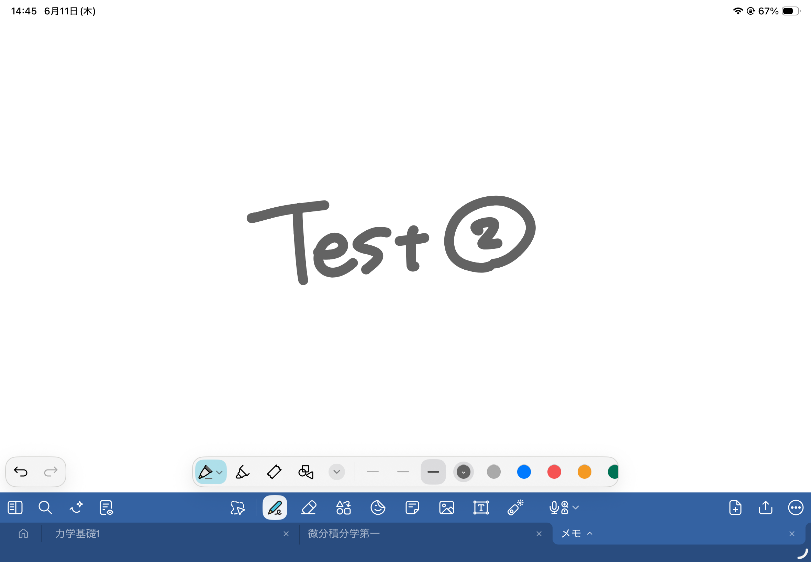
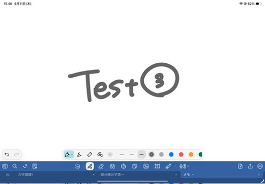

WHO WE ARE
ABOUT US
私たちは、国際的な分子ロボティクス（生体分子ナノテクノロジー）の学生コンテスト「BIOMOD」への出場を目指して活動している、東京科学大学の学生チームです。
DNAやRNA、タンパク質といった生体分子を巧みに設計し、ナノサイズのロボットや人工細胞を創り出す研究・開発を行っています。



私たちは、国際的な分子ロボティクス（生体分子ナノテクノロジー）の学生コンテスト「BIOMOD」への出場を目指して活動している、東京科学大学の学生チームです。
DNAやRNA、タンパク質といった生体分子を巧みに設計し、ナノサイズのロボットや人工細胞を創り出す研究・開発を行っています。

